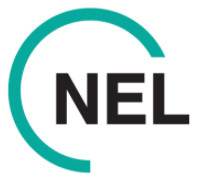
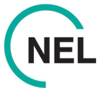

Our values
Collaborative
Leadership
Innovative
Trusted
Impactful
Our vision: A thriving community leading the movement for data driven, evidence-based decision making by sharing learning across health and social care beyond typical organisational and geographic boundaries
These pages link to the work of the Data and Analytics Professionalisation team. Working to develop the career paths for those in Data and Analytics across Health and Care. FutureNHS log in required.
Detail of NHS National Competency Framework for Data Professionals
The objective of the ‘AnalystX Observatory’ is to focus on the analytical profession in order to quantify, provide insights, intelligence and assurance that all levels of organisation strategy and delivery within the NHS.
The objective of the ‘AnalystX has compiled some excellent signposting to learning and development resources. Check these out as grouped by recommended training from the different AnalystX Communities, grouped by software package, or training focused on NHS dataset knowledge.
This workspace offers access to and training in research, evaluation and evidence. It’s designed for analysts and policy teams and includes the tools and information you need to ensure NHS programmes are underpinned by the best available evidence and robust evaluation..
Data engineering is all about building the systems that allow data to be collected and used. In other words, it's the plumbing that brings data from various sources and gets it ready for analysis by data scientists and other consumers.
We are a community of data science professionals and enthusiasts across the health and care system. Our mission is to create a community accessible by anyone interested in data science, where we can share resources, projects and events, and signpost other communities.
Welcome to the vibrant AnalystX Data Viz & BI Community of Practice (CoP)! We are a dynamic group of data enthusiasts, analysts, and business intelligence (BI) professionals dedicated to exploring the fascinating world of data visualization and BI tools. Whether you're an experienced practitioner or just starting your journey, our community offers a supportive environment to learn, share, and grow your skills.
Welcome to the Generative AI Working Group in Healthcare Data and Analytics! We are a collaborative group of Analysts, Engineering and Enthusiasts dedicated to exploring the transformative potential of generative AI in the healthcare landscape.
This site is open to all to share good practice, basic knowledge around access and using R across NHS England platforms, and creating a place for us to share our collective knowledge, code, shared resources and content.
Promoting the use of R and open analytics in health and care - a community of practice for data analysis and data science using open source software in the NHS and wider UK health and care system.
To drive innovation and best practices in the use of GIS in the UK health and care sector, a Centre of Excellence has been established. This centre serves as a hub for expertise, providing training, resources, and support to healthcare organisations and professionals.
Python is an open source, state of the art programming language, used by developers, data scientists, and data engineers. Python's widespread adoption is, in part, due to its accessible 'human readable' syntax, making it relatively easy to pick up and learn.
Imagine your healthcare journey as a winding road filled with twists and turns, from the moment you present at your GP with a problem to when you leave hospital treated. Now, picture a tool that acts like a map, guiding healthcare providers through every step you take during that journey. That's essentially what process mining does in healthcare.
A list synthetic and fake datasets for training and activities - in development.
AnalystX calendar with events from the NHS and strategic partners.
Share your work and solve your challenges through the discussion forums by engaging with colleagues across health and care.


 
